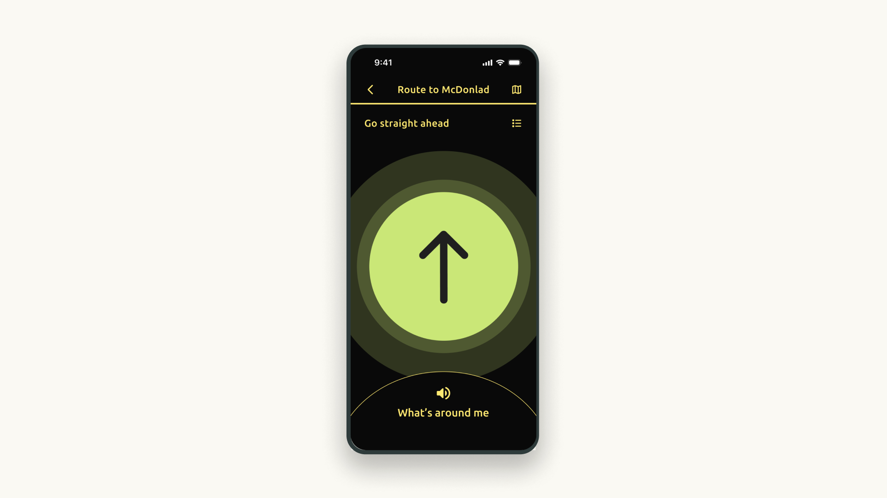

Accessible Indoor Map App
Citygeni is Mapxus's accessible indoor navigation app, built for users across the visual impairment spectrum. I led the user research programme and worked directly with the design team to translate findings into product decisions, from core navigation mechanics to interface details.


Research
I conducted in-depth interviews with participants across the full spectrum of visual impairment, from those with complete blindness to those with low or residual vision. The two groups had fundamentally different spatial perception strategies, which shaped every subsequent design decision.
Participants who were blind had developed exceptional sensitivity to non-visual cues: air direction to locate exits and entrances, the sound and feel of floor tiles to orient themselves, and pole feedback to judge obstacle distance. Notably, none relied on VoiceOver or TalkBack, they had built their own systems. This told us the app needed to work with those systems, not attempt to replace them.
Participants with low vision still led with sight, but their visual experience was highly specific. They found standard high-contrast interfaces (black text on white) more fatiguing than lower-contrast alternatives. They needed a minimum 16px font size and preferred large iconography over text labels for direction cues. These were not preferences, they were functional requirements.


Accessibility features
One of the core challenges was communicating spatial direction in an indoor environment without relying on visual landmarks. I designed the "sound beacon", a directional audio system that guides blind users through navigation steps, calibrated to work alongside the spatial awareness strategies participants had described in research.

For low vision users, the interface used a black background with yellow text, a combination that reduced visual fatigue based on what participants reported. Text was kept minimal throughout; navigation directions were communicated through large animations occupying most of the screen, reducing the need to read under pressure. Every decision traced back directly to a research finding.
Launch
Citygeni launched on Google Play and the App Store after six months of development.